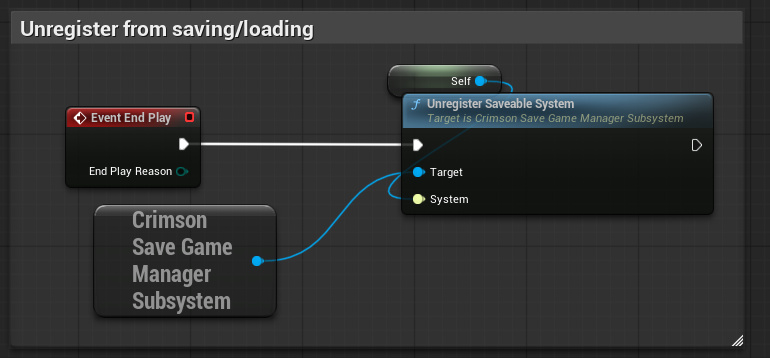

Saving Player Data (Blueprints)
This guide covers the Blueprint-only implementation for making persistent, player-centric systems (like inventory, skills, or stats) saveable. This process uses the ICrimsonSaveableSystem interface.
This guide is for Blueprints. For a C++ approach, see the C++ guide.
Step 1: Create Your Data Fragment
First, create a new Blueprint to hold your save data.
- In the Content Browser, right-click and select Blueprint Class.
- Expand the "All Classes" section and search for
CrimsonSaveGameFragmentBase. Select it as the parent. - Name this new Blueprint
BP_MyInventoryFragment. - Open
BP_MyInventoryFragmentand add variables for the data you want to save (e.g.,SavedCurrencyas an Integer,SavedItemsas an array of your Item Struct).
Step 2: Implement the Interface
Now, open the Blueprint component that manages your live data (e.g., BP_PlayerInventoryComponent).
- Go to Class Settings in the toolbar.
- In the Details panel, find the "Interfaces" section.
- Click "Add" and search for
ICrimsonSaveableSystem. Select it.
Step 3: Implement Interface Functions
After adding the interface, three new functions will appear in the "My Blueprint" panel under "Interfaces". You must implement them.
GetFragmentName
Double-click this function. Add a Return Node and type in a unique string name for this fragment, like "PlayerInventory_BP".
GatherSaveData
This function creates the fragment and copies your live data into it.
- Right-click and add a
Create Object from Classnode. - Set the class to
BP_MyInventoryFragment. - From the new object, use
Set SavedCurrencyandSet SavedItems, pulling the values from your component's live variables (e.g.,CurrentCurrency). - Connect the new object to the
Return Valuepin on theReturn Node.

RestoreFromSaveData
This function takes a fragment from the manager and applies its data to your component.
- Drag off the
Fragmentinput pin and use aCast To BP_MyInventoryFragmentnode. - From the "As BP My Inventory Fragment" pin, get the saved data (e.g.,
Get SavedCurrency). - Use this data to set your component's live variables (e.g.,
Set CurrentCurrency).

Step 4: Register Your System
Finally, you must tell the SaveGameManager that your system exists.
- In your component's Event Graph, find the
Event BeginPlaynode. - Add a
Get Crimson Save Game Manager Subsystemnode. - From the manager, call
RegisterSaveableSystem. Pass aselfreference to the "System" input. - Find the
Event EndPlaynode. - From the manager, call
UnregisterSaveableSystem. Pass aselfreference.


That's it! Your Blueprint component will now be automatically included in all save/load operations.